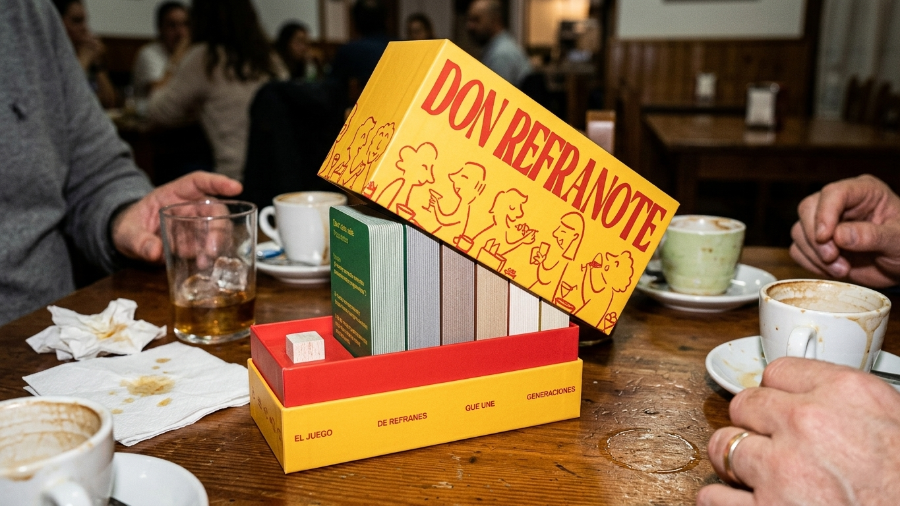
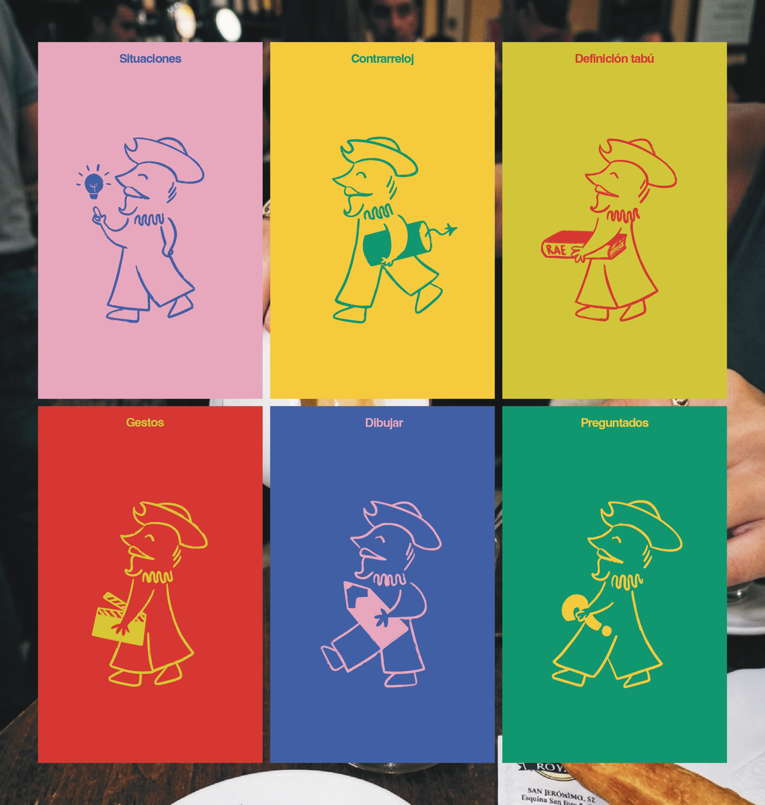

Don Refranote
EN
Don Refranote, an original concept by La Sobremesa, is a board game inspired by traditional Spanish sayings and expressions. The project covers everything from the concept and game mechanics to the card design, illustrations, packaging and art direction.
ES
Don Refranote, una idea original de La Sobremesa, es un juego de mesa inspirado en los refranes y expresiones populares españolas. El proyecto abarca desde la creación del concepto y la mecánica del juego hasta el diseño de las cartas, ilustraciones, packaging y dirección de arte.

